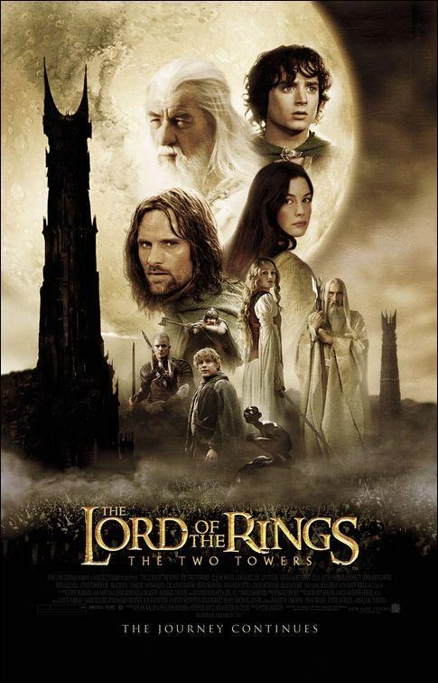

Ficha de la película
Año: 2002
Director: Peter Jackson
Autor: J.R.R. Tolkien
Duración: 179min
Saga: EL SEÑOR DE LOS ANILLOS
Reparto principal:
Elijah Wood, Ian McKellen, Viggo Mortensen, Sean Astin, Orlando Bloom, John Rhys-Davies, Dominic Monaghan, Billy Boyd, Andy Serkis, Bernard Hill, Miranda Otto, Karl Urban, David Wenham, Brad Dourif, Christopher Lee, Hugo Weaving, Liv Tyler, Cate Blanchett
Sinopsis
La Compañía del Anillo se ha dividido. Frodo y Sam continúan su camino hacia el Monte del Destino para destruir el Anillo Único, guiados por la misteriosa y traicionera criatura Gollum. Mientras tanto, Aragorn, Legolas y Gimli persiguen a la horda de Uruk-hai para rescatar a Merry y Pippin. A medida que las fuerzas de Saruman avanzan hacia el reino de Rohan, los héroes deben unir fuerzas con el rey Théoden y preparar una resistencia desesperada en la fortaleza del Abismo de Helm ante el inminente choque contra un ejército de diez mil orcos.
Personajes que aparecen
Frodo Bolsón · Samwise Gamgee · Gollum / Smeagol · Aragorn · Legolas · Gimli · Gandalf el Blanco · Merry · Pippin · Théoden · Éowyn · Éomer · Faramir · Gríma Lengua de Serpiente · Saruman · Treebeard (Bárbol) · Arwen · Elrond · Galadriel
Lugares importantes
Rohan (Edoras y el Abismo de Helm) · Isengard · Emyn Muil · Las Ciénagas de los Muertos · Puerta Negra de Mordor · Osgiliath · Bosque de Fangorn
Objetos importantes
Anillo ÚnicoAndúril (en proceso de forja / Narsil)Espada Herugrim (de Théoden)Palantír de Orthanc Pan de LembasCuerda elfa de LothlórienCuriosidades
Gritos reales de la hinchada: La voz del ejército de 10.000 Uruk-hai en el Abismo de Helm fue grabada en un estadio de críquet en Nueva Zelanda, donde Peter Jackson dirigió a más de 25.000 fanáticos para que cantaran e hicieran ruidos en idioma orco.
Lesiones reales en escena: Viggo Mortensen se rompió dos dedos del pie al patear un casco de Uruk-hai cuando cree que Merry y Pippin murieron (el grito de dolor de la escena es totalmente real). En esa misma secuencia, Bernard Hill sufrió una costilla rota y Orlando Bloom se cayó de un caballo rompiéndose las costillas.
Revolución del CGI con Gollum: Fue la primera película en utilizar de forma masiva la tecnología de captura de movimiento (motion capture) en tiempo real sobre un escenario con Andy Serkis, transformando la industria de los efectos especiales.